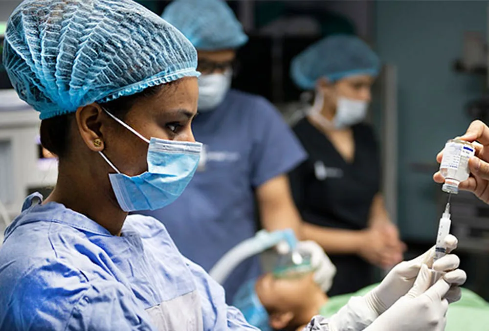

Expanded Nursing Uganda Explanation
Peri-Operative care should be understood beyond a short definition. Link the concept to patient history, focused assessment, common risks, nursing priorities, documentation and evaluation of outcomes.
Contents, 14 sections (tap to expand)
01 Peri-Operative care
Peri-Operative care is the care rendered to a patient before, during and after the surgery .
Peri-Operative care is composed of the following
- Pre-operative care : The period of time before surgery.
- Intra-operative care : The period of time during surgery.
- Post-operative care : The period of time after surgery.
02 Reasons For Surgery
1. Curative : To completely eliminate the underlying disease or condition.
Examples :
- Appendectomy : Removal of a diseased appendix.
- Tumor removal : Excision of cancerous growths.
- Cholecystectomy : Removal of the gallbladder.
2. Diagnostic : To obtain information about a suspected condition.
Examples :
- Exploratory Laparotomy : Surgical exploration of the abdominal cavity to diagnose the cause of symptoms.
- Biopsy : Removal of a tissue sample for examination under a microscope.
- Endoscopy : Insertion of a flexible tube with a camera to visualize internal organs.
3. Reconstructive : To restore function, appearance, or both to a damaged body part.
Examples :
- Plastic Surgery : To repair facial defects, burns, or other disfigurements.
- Hand Surgery : To repair damaged tendons, ligaments, or bones in the hand.
- Orthopedic Surgery : To repair broken bones, joint replacements, or spinal deformities.
4. Palliative : To alleviate symptoms and improve quality of life when a cure is not possible.
Examples :
- Gastrostomy : Surgical creation of an opening in the stomach for feeding in patients with esophageal cancer.
- Stent placement : Insertion of a tube to open a blocked artery or airway.
- Pain management procedures : Nerve blocks or other interventions to reduce pain.
03 Types of Surgery
1. Major Surgery : Complex procedures involving extensive tissue manipulation, often requiring prolonged operating time, general anesthesia, a large surgical team, and advanced equipment.
Characteristics :
- Time : Longer procedure duration, often several hours.
- Anesthesia : General anesthesia is typically required.
- Team : Large team of surgeons, nurses, and support staff.
- Equipment : Sophisticated equipment and instrumentation.
- Recovery : Extended hospital stay and a longer recovery period.
Examples :
- Open heart surgery : Repairing heart valves or coronary arteries.
- Organ transplantation : Replacing a failing organ with a donor organ.
- Major abdominal surgery : Removal of a large tumor or extensive bowel resection.
- Complex orthopedic procedures : Joint replacements, spinal fusion, major bone reconstruction.
2. Elective/Planned Surgery : Surgery that is scheduled in advance, with no immediate threat to life. The condition is not life-threatening, and the patient can prepare for the procedure.
Characteristics :
- Urgency : Non-urgent, allowing for thorough pre-operative evaluation and preparation.
- Timing : Scheduled at the patient’s convenience or when medically appropriate.
Examples:
- Cataract surgery : Removal of cloudy lens in the eye.
- Cosmetic surgery : Procedures for aesthetic enhancement.
- Joint replacement surgery: Replacing a worn-out joint with an artificial one.
- Laparoscopic cholecystectomy : Removal of the gallbladder through small incisions.
3. Minor Surgery : Procedures that are less complex and invasive, requiring shorter operating time, local anesthesia, and a smaller surgical team.
Characteristics:
- Time : Shorter procedure duration, often less than an hour.
- Anesthesia : Local anesthesia or sedation may be used.
- Team : Smaller surgical team, often a single surgeon and nurse.
- Equipment : Simpler instrumentation and equipment.
- Recovery : Shorter hospital stay or even outpatient procedure.
Examples:
- Incision and Drainage (I&D) : Draining an abscess or other fluid collection.
- Biopsy : Removal of a small tissue sample for diagnostic testing.
- Skin lesion removal : Excision of a mole, cyst, or other skin growth.
- Tooth extraction : Removal of a tooth.
4. Emergency Surgery : Surgery performed immediately to address a life-threatening condition or a severe injury.
Characteristics :
- Urgency : Immediate, often requiring immediate action to prevent serious complications or death.
- Preparation : Minimal preoperative evaluation, often conducted simultaneously with the surgical procedure.
Examples :
- Trauma surgery : Repair of severe injuries due to accidents or assault.
- Appendicitis surgery : Removal of an inflamed appendix.
- Hemorrhagic stroke surgery: Surgery to stop bleeding in the brain.
- Cardiac arrest surgery : Emergency procedures to restore heart function.
04 PRE-OPERATIVE CARE OF PATIENTS
- Identify the requirements for pre and post operative care.
- Prepare requirements for pre and post operative care.
- Perform pre and post operative care.
Preparation for surgery should begin as soon as the doctor makes a diagnosis and decides that an operation is necessary. From that moment on, the patient and relatives are faced with the decision of accepting this treatment and its consequences or not. The doctor should tell the patient and family why an operation must happen, what will be done and what the probable outcome will be. An appointment for admission is now arranged depending on the acuteness of the illness, period of preoperative care and the amount of time the patient requires to make necessary arrangements regarding his family, financial matters and work.
1. Admission : patient may be admitted a day before or several weeks or days in a surgical ward for a planned surgery, depending on the extent of the pre-operative treatment, e.g., alcoholics, wasted cancer patients, so that their nutritional and electrolyte status and underlying conditions are treated before surgery.
2. Rapport : Patient and significant others are received by the nurse, given seats, greeted, and introduction of names done by the nurse. Patient is showed a bed, and he is introduced to the ward or room-mates, he is showed the ward environment, i.e. the latrines, shelters, stores, kitchen, sluice room and other departments within the hospital that are necessary for him to know, visiting hours, meal times.
3. Physical preparations and History : History of the disease is taken, starting from the present main complaint, and other associated complaints presently, history of previous illness, or operation done is noted, any drugs taken by the patient, any allergy to any drug, any dietary restrictions, patient’s occupation, religion, marriage status, etc.
4. Vital Observations are taken and recorded to provide a baseline for future comparisons, weighing is done and the surgeon is informed to come and review the patient.
5. Psychological preparation : There is need to prepare the patient before surgery psychologically because patients always have fears when faced with the fact of undergoing an operation, and this depends on the individual basic personalities, habitual reactions to stress over the years, general state of mental health, and the preconceptions that they have concerning surgery and anesthesia. These fears include; fear of unknown, post-operative pain, discovery of cancer, the loss of organs that have special meaning for them, the hazard of death or fear of what other friends have been telling them about surgery, hazards of anesthesia, vulnerability while unconscious, threat of loss of job and financial security, loss of social and familial roles, and the problem of being separated from family members and former activities. These fears cause anxiety in patients going for surgery and these can be expressed in a variety of behaviors such as: becoming silent and withdrawn, hopeless and helpless, childish, aggressive and disobedient, evasive, tearful.
Measures to alley the patient’s anxiety
- Information and Orientation : Patient is given explanations or printed information about hospital routines, visiting hours, meal times, specific locations and general orientation to the hospital environment.
- Procedure Explanations : Give full explanations of all procedures the patient may undergo, covering the pre-operative, intra-operative, and postoperative phases.
- Reasoning and Discomfort : Patient is made aware of the reasons for the various procedures to be done on him and any discomfort that may be experienced, ensuring the patient understands the reasons for the intervention.
- Collaborative Communication : There must be prior consultation between a nurse and the doctor in order to maintain the uniformity and accuracy of the information to be given to the patient.
- Questioning and Clarification : Patient should be given a chance to ask questions concerning the operation and the postoperative period, providing reassurance and addressing any concerns.
- Information Management : Give only as much information as the patient wishes to know, as too much information given in a short time may create more anxiety or when given at a wrong time, like some few hours to operation.
- Peer Support : Patients going for major surgery like mastectomy, colostomy, may benefit from being introduced to people who have successfully recovered from these operations.
- Occupational Therapy : Occupational therapy can be arranged for patients who are facing an extended preoperative period, e.g. games, handicrafts, television to distract the patient and ease the fear and loneliness.
- Family and Friends : Encourage visits from family members and friends to have time with the patient, to provide companionship and emotional support.
- Religious Support : Ascertain the patient’s religious preference and arrange for a priest, minister, or rabbi to visit if the patient so desires.
- Age-Appropriate Language : A child should be told in simple language appropriate to his age and level of development what to expect before and after surgery.
- Honesty and Clarity : The child should never be told lies. Be honest when telling him about surgery, tests, pain, stitches, etc.
- Socialization : Let the child be with other hospitalized children for easy adjustment.
- Note : handling fears in this way can smooth the patient’s operative course. Studies show that the calm,emotionally prepared pre-operative patient is able to withstand the induction of anesthesia better and also experiences less postoperative nausea and vomiting and fewer postoperative complications.
05 Consent Form
A consent form is a document with important information about a medical procedure or treatment, a clinical trial, or genetic testing . It also includes information on possible risks and benefits. If a person chooses to take part in the treatment, procedure, trial, or testing, he or she signs the form to give official consent. Any patient undergoing a surgical procedure, however minor, must sign a consent form.
- Avoiding Unwanted Procedures: Safeguards the patient from undergoing surgery they are unaware of or do not consent to.It protects the patient against submitting to operations that she or he does not know about or does not want.
- Ensures the patient understands the nature of the proposed procedure, including its risks, benefits, and potential complications, empowering them to make an informed and voluntary decision.
- Legal protection : Protects healthcare providers, including surgeons and hospital staff, from liability in cases where a patient or their family alleges that surgery was performed without consent.
- Respect for Autonomy : Acknowledges and respects the patient’s right to self-determination and bodily integrity.
- Open Dialogue : Encourages open communication between the patient and healthcare providers, allowing for any questions, concerns, or anxieties to be addressed before proceeding with the procedure.
- Family Involvement : Facilitates the involvement of family members or loved ones in the decision-making process, particularly when the patient desires their input or support. Sometimes the patient wishes to talk to a close relative before signing the form
- Clear Explanation : The patient must have the full explanation of the operation before signing the consent form and pictures and diagrams may be necessary.
- Potential Complications : The patient must be told about any possible complications and the disfigurements that may arise from the surgery.
- Procedure and Investigations : Explain about procedures and investigations and let him understand before accepting the operation.
- Anesthesia : Explain about the administration of anesthesia, addressing any concerns or questions the patient may have.
- Pain Management: The patient should be reassured about pain management strategies during and after the surgery.
- Disfigurement : If the surgery involves the possibility of disfigurement, such as amputation, mastectomy, or hysterectomy, this should be openly discussed with the patient, acknowledging the potential impact on their body image and self-esteem.
- Social and Economic Background : The patient’s social and economic background should be considered, understanding potential challenges or concerns related to recovery, finances, and daily life.Encourage the patient to talk about his social, economic background, and talk to him about spiritual life.
- Spiritual Life : The patient’s spiritual beliefs and practices should be acknowledged and addressed, offering appropriate support or resources if desired.
- Organ or Body Part Removal : If any organ or body part is to be removed, the patient should be informed of this in a clear and sensitive manner.
- Simple Explanations are given in terms that the patient can understand- the patient needs an honest and fair statement of what may be faced both in surgery and following the operation.
- Signature : Adults sign their consent forms unless unconscious or mentally incompetent, thus making a relative or a guardian to sign on his behalf. Children under 18 years must be signed for by an adult and preferably a relative. If a child’s parents can not be present, permission be got by telephone or letter or the surgeon may sign the form personally, depending on the laws of the state or court order may have to be obtained permitting the operation.
- Make sure this accompanies other medical forms to the operation room.
- After all the above details, a patient is asked to sign the consent form which indicates that he consents to have the operative procedure performed. This implies that he has been provided with the knowledge necessary to understand the nature of the procedure to be carried out as well as the known and possible consequences of the operation.
6. Investigations : Most of these investigations are done to make sure that the patient’s physical status is at maximum fitness and to ensure that coexisting diseases that might alter the patient’s response to surgery or his recovery are treated.
- Routine radiographs of the chest are taken, including sputum examinations: to be sure that the patient does not have any lung problem that would complicate anesthesia or recovery after surgery, especially difficulties with inadequate oxygen supply through the lungs and cardiac function. Signs of upper respiratory infections are noted and reported.
- Urinalysis is done : to detect urinary tract infection or any other disease that may become a serious problem especially when it comes to drug elimination after anesthesia or presence of sugar or proteins or acetone which may indicate the presence of diabetes mellitus, chronic kidney disease, starvation or dehydration respectively: for any of these may alter the treatment that is needed before, during and after surgery.
- Blood tests such as, complete blood count, hemoglobin, blood grouping and cross matching bleeding and clotting time: these will help to make sure that the patient has a chronic infection, anaemia or any blood problems, which may bring problems during surgery, or interfere with wound healing and prolong a period of recovery. If Hb is low, shock may ensure intra-operatively, or bleeding problems may cause problems intra or post-operatively.
- Specific investigations like ECG, Plain abdominal radiographs: are done to assess the cardiac functions so as to influence the care to be given to the patient preoperatively or for his condition to stabilize first before surgery.
7. Treatment : Antibiotics are given according to the results of the investigations and pre-existing conditions. Any other condition discovered is treated appropriately before the patient is considered ready for surgery: heart conditions, blood conditions, respiratory, urinary, digestive, etc. 8. Nutrition : The patient should be in the best possible state nutritionally before undergoing anesthesia and surgery. This is because;
- Dehydration and poor nutrition affects the prognosis post-operatively, particularly in infants and elderly especially if caused by excessive vomiting or diarrhea and this may cause electrolyte imbalance, coupled with chronic illness and poor appetite
- Protein deficiency leads to slow wound healing and low resistance to infection
- Lack of vitamin C retards wound healing.
- Interventions
- Balanced Diet: A well-balanced diet tailored to the individual patient’s needs should be provided, including adequate protein, carbohydrates, fats, vitamins, roughages, and plenty of fluids.
- Monitoring and Reporting : Nurses play a role in monitoring the patient’s food intake and reporting any concerns to the surgeon or dietician.
- Individualized Approach : The patient’s likes and dislikes should be considered when planning meals to encourage food intake and ensure optimal nutrition.
- Appropriate Feeding Route s: Feeding methods should be chosen based on the patient’s condition and needs, ensuring they receive adequate nutrition through the most appropriate route.
9. Exercises : Patients need to be instructed pre-operatively concerning the proper way to cough, deep breathe, turn and move their extremities during the postoperative period. Such instructions, given in sufficient detail and at the correct time, greatly reduce operative and post-operative complications.
- Deep breathing exercise : this is done by inhaling slowly through the nose, distending the abdomen and exhaling slowly through the mouth, pulling the abdomen in until all air has been expelled. This should be done at least 5-10 times every hour. This is important for effective aeration of the lungs and the tissues to allow full lung expansion in thoracic surgery, to expel secretions, to prevent pneumonia and Atelectasis.
- Coughing exercise: patient is instructed to sit or lie, take a deep breath, exhale through the mouth and then follow with a short breath while coughing from deep in the lungs. Deep breathing exercise should be done before coughing exercise to stimulate coughing reflex. Patients who will go for thoracic or abdominal surgery should be showed how to splint their incision before coughing in order to minimize pressure on the sutures and to control pain. A small pillow or rolled towel may be held against the incision to facilitate splinting.
- Turning exercises: the patient will need to practice turning from side to side using the side rails if available. This prevents venous stasis and pooling of secretions in the lower lobes of the lungs, predisposing to pulmonary complications. This should be done every 1-2 hours post-operatively.
- Extremity exercises: range of movement exercises of all the joints, flexing and extending the joints and to move each foot in a circular motion. These help to prevent circulatory problems, such as deep venous thrombosis, prevent muscle wasting and disuse, and encourage wound healing due to sufficient blood supply.
10. Treatment of existing abnormalities/infections : Abnormalities that have been detected are treated according to the diagnostic findings, e.g. mouth infections, dental caries, skin lesions, constipation, respiratory and cardiac conditions. Antibiotics, fluids, blood transfusions, painkillers are given as per the patient’s condition. 11. Hygiene : Hygiene ensures cleanliness of the skin, nails, umbilicus in case of abdominal surgery, oral care since this is the entrance to the respiratory system and digestive. It is aimed at minimizing the number of microbes that will be carried into the deeper tissues from the skin when the surgeon makes the incision. Patient’s gowns, bed linen, utensils and equipment of care are made clean including the tables, bed, etc. 12. Pre-operative visits: Visits from theater nurses and team are important to know the patient, and what he knows about the operation, to tell him the approximate length of surgery, to tell him what he will see , hear, and smell before he goes to sleep and what to expect in the recovery room. 13. Rest and sleep : Physical exhaustion deteriorates the general health and hinders many body activities and mental exhaustion aggravates shock. Patients may not relax due to fear of the forthcoming operation.
- Prepare a comfortable freshly made bed and in a well-ventilated room.
- Nurse avoids talking to a tired patient.
- Visitors are restricted from always disturbing the patient.
- Noise of any kind is avoided, i.e., using rubber-soled shoes, talking loudly is not allowed, radio sounds put at low tones, banging doors and using trolleys that make a lot of noise are avoided.
- Sedation may be necessary to induce sleep or to reduce the pain that may interfere with sleep,
06 Preparation of the patient on the eve of surgery (12 hours to operation)
Skin care of the area to be operated: The skin site preparation preoperatively is aimed at removing dirt, oils and microorganisms, to prevent the growth of microorganisms that remained and to leave the skin undamaged with no irritation from the cleansing and shaving procedure, and the area depends on the type of surgery to be done.
- The areas to be prepared should always be larger and wider and longer than the area of the proposed incision, because the surgeon may unexpectedly widen or extend the incision line.
- First wash the area with soap and water and start shaving when you are sure of the cleanliness.
- Use a strong, light, well-focused and sterile safety razor or blade.
- Shave against the direction of the hair shaft to ensure clean, close shave.
- Check the skin for nicks, irritations, and cuts since these are all potential sites for infection.
- Use skin antiseptics after shaving to clean the site, like chlorhexidine, iodine and others.
Specific preoperative preparations;
1. Abdominal operation : The patient’s gastrointestinal tract needs special preparation on the evening before surgery in order to reduce the possibility of vomiting and aspiration during anesthesia and to prevent contamination from fecal material during bowel surgery. The measures taken are:
- restriction of foods and fluids to prevent vomiting during surgery, the aspiration of any vomitus and the resultant development of aspiration pneumonia. Solid food must be withheld 7-10 hours before operation, most patients receive nothing by mouth (NPO) after midnight; tea, water may be given up to 4 hours before surgery. When the surgery is scheduled until late afternoon, the patient may eat a light breakfast in the morning. When the patient is on NPO, the nurse should tell the patient not to eat and why; removes food and water from the patient’s bedside; places NPO-sign on the door and gives the report to the incoming nursing staff; extremely malnourished and debilitated patients are given intravenous infusions of glucose, amino acids or plasma up to the moment of surgery.
- two or three enemas may be given in the evening to prevent contamination of the peritoneal cavity from the spillage of fecal content during surgery; in some cases, laxatives are given 2-3 days pre-operatively; nasogastric tubes for suction, drainage may be inserted in the evening or morning of surgery in order to remove gastric and intestinal contents; flatus tubes may as well be inserted to relieve gaseous distension;
- catheterization is done to drain urine and to relieve urine retention postoperatively and intra-operatively to prevent accidental injury to the urinary bladder if it is full with urine during abdominal surgery.
2. Genito-urinary system : The renal functions are often impaired by diseases of the kidneys, prostate, urethra, bladder or ureter. The patient should be instructed to take plenty of oral fluids at least 2 liters per day and the fluid balance chart be strictly charted; an indwelling catheter be inserted for continuous bladder irrigation, washout , drainage post-operatively; intravenous fluids be run to irrigate the bladder so as to avoid urine stasis which predispose to calculi formation and bladder wall infection; urine sample is removed aseptically for urinalysis; patient is encouraged to pass urine frequently and any abnormalities are treated appropriately.
3. Rectal operation/haemorrhoidectomy : This requires special preparations because it is not easy to render the rectum a sterile or aseptic and it is also difficult to control the passage of stool. The bowel may be emptied by an aperient’s administration given in the evening before operation and also repeated in the morning and 8 hours before operation. Simple enema of soap and water is given followed by washing of the rectum and shaving the perineum.
4. Gynaecological surgery : All patients going for this operation should have antiseptic douche done and no spirit or ether are applied on the genital mucosa. Urinary catheter is passed in situ before surgery and should continue post-operatively.
5. Respiratory operation : All patients for respiratory need close respiratory observations and any respiratory infections should be treated before surgery and respiratory exercises are taught preoperatively. Paired organs: The affected organ of the pair like the eye, ear, limb, breast, should be marked with a tag or an adhesive tape to prevent the removal of the normal side.
On the morning of surgery the nurse usually awakens the patient about an hour before preoperative medications are scheduled. During that hour, the nurse does the following tasks:
- She records the patient’s vital signs as baseline for future observations and comparison, to detect abnormalities which may entail postponement of operation, e.g., pyrexia, tachycardia (120b/m over), or bradycardia (pulse rate below 60 b/m), urine results and weight for future comparison and for drug calculation.
- She checks for the skin preparation if done well or there is need to be repeated in a thorough manner.
- She asks the patient to void before going to theater to avoid bladder injury in the lower abdominal and pelvic surgery, incontinence during operation (due to anesthesia), restlessness during the early post-operative period, or if the catheter is in situ, the output is emptied and recorded.
- She carries out special orders like giving enemas, insertion of catheters if not done in the evening, NGT, putting infusion lines if not done before and hanging fluids prescribed before anesthesia (1 liter of normal saline), or checking if the line is patent and the surrounding tissues are not infiltrated.
- She gives the patient oral hygiene and removes any dentures and safely keeps them.
- She gathers all the necessary documents like form 5, admission and observation charts, laboratory forms, x-ray radiographs, consent form, fluid balance chart, etc, and puts them together ready for theater.
- She checks if the consent form is signed for and helps the patient if not done.
- In privacy, she asks the patient to remove his or her own personal clothing which are safely to be kept, she removes and keeps the patient’s jewelry, earrings, but the wedding ring is usually left insitu and strapped with an adhesive tape; necklaces, bangles, plastic rings or rubber are too removed and kept together with other things.
- She dresses the patient in a theatre gown which is clean and perhaps supports stockings. If the patient has long hair, braid them into 2 braids, all hair pins are removed to prevent scalp injury during and after surgery, and the head is covered with a protective cap.
- Colored nail polish is removed with the nail file to help in easy assessment of cyanosis from the nail bed. Anything that is difficult to remove can be strapped off.
- She questions the patient to make sure that food has not been eaten for the last 8 hours, or fluids taken during the preceding 4 hours, and report immediately if the patient has eaten so that surgery is postponed.
- She makes the patient’s identification band containing his name, age ward, type of surgery to be undertaken and attaches it to the patient. She makes sure the information is accurate.
- She gives preoperative medications : this is usually a combination of sedatives and analgesics opiates, e.g., morphine 10-15mg, or pethidine 50-100mgs, temazepam 10-20mg, tranquilizers such as diazepam 5-10mgs. These drugs are meant to reduce apprehension so as to reduce shock, to ensure sleep, and to reduce the amount of anesthetic drugs to be used, and to create amnesia for the events that precede surgery
- Other drugs sometimes may be prescribed to be given before the patient is transported to theatre, such as antibiotics like Metronidazole i.v, + ampicillin gentamicin or chloramphenicol in some abdominal conditions, gynaecological conditions, head injury, gun shot wounds, etc. give according to the prescription.
- Anti-secretions like atropine 0.6-1 mg is given to dry up secretions or to prevent overproduction when inhalation anesthetics are used especially ether; it improves the heart action and suppresses vagal influence on the heart. These drugs must be given half to 45 minutes preoperatively to ensure the above effects. The time of administration should be recorded accurately. If omitted or delayed, the anesthetist should be informed. Do not give under the maxim “better late than never”.
- When all the preparations are ready, and the time of surgery has come, the patient is transported to the operating theater on a couch, rolled by 2 nurses. Minimal noise should be made as hearing is very acute after pre-medications. All movements to theater should be gentle, steady and unhurried. The nurse should carry all documents to the theater with the patient.
- A full report is given to the theater nurse, or anesthetist concerning the patient.
- A post-operative bed is then made with clean linen . The specific bed depends on the type of surgery, e.g., divided bed, fracture bed with traction appliances, etc. bedside accessories like bed cradles, infusion stands, vital observations tray, mouth care tray, infusion trays, oxygen apparatus and cylinder, suction apparatus and suction machines, bed elevators, mosquito nets, etc. this are the items necessary for resuscitation immediately post-operatively. The bed should be warm, without overheating to prevent shock.
07 Preparation for pre-operative care
- Steps Action Rationale
- 1. Refer to general rules and ensure understanding of the type of operation to be done. To gain confidence in the nurse and for an informed consent to be given.
- 2. Carry out preoperative nursing assessment. To collect baseline data from the patient and the family.
- 3. Ensure that diagnostic tests are done and results are ready before operation i.e. urinalysis, chest x-ray, blood test e.g. ABO group and rhesus factor, and HB, CBC, ECG. To clarify pathological conditions and be able to manage them before surgery.
- 4. Obtain consent from the patient for operation or if minor or unable to consent; next of kin consents on behalf of the patient. To gain approval and protect the patient from unwanted procedures as well as preventing litigation related to unauthorized surgeries.
- 5. Stop all solid foods and oral fluids 4-6 hours before operation. To ensure empty stomach and prevent vomiting which may occur during the anaesthesia and cause respiratory failure or aspiration pneumonia.
PHYSIOTHERAPY:
- Steps Action Rationale
- 6. Deep breathing exercises: To improve lung expansion and facilitate oxygenation of tissues before and after operation.
- – Position patient in an upright position. To promote chest expansion.
- – Instruct patient to place palms of both hands along the lower anterior rib cage. It allows the patient to feel the chest rise as the lungs expand.
- – Instruct the patient to exhale gently and completely. To empty the lungs.
- – Instruct the patient to breathe in through the nose deeply and hold the breath for 3 seconds. To promote lung expansion.
- – Instruct the patient to exhale through the mouth, pursing the lips like when whistling. To empty the lungs.
- – Instruct the patient to do a return demonstration. To check understanding.
- 7. Coughing and splinting (Muscle support): Coughing helps to remove retained mucus from the respiratory tract while splinting minimizes pain when coughing or moving.
- 8. Leg exercises: To prevent muscle weakness, promote venous return and decrease complications related to venous stasis i.e. deep venous thrombosis.
- – Request the patient to sit up. For easy demonstration of the exercises.
- – Straighten the patient’s knees, raise the foot, extend the lower leg, hold this position for a few seconds. Lower the entire leg. Practice that exercise with the other leg (calf pumping). To prevent weakness of the calf muscles and promote venous return. It contracts and relaxes calf muscle and gastrocnemius muscles.
- – Request the patient to point the toes of both legs towards the foot of the bed and then towards the chin. To exercise muscles and joints of the toes.
- – Request the patient to keep legs extended and to make circles with both ankles. First circle to the right and second to the left. Ask the patient to perform a return demonstration. To prevent pain and stiffness of the joints.
Requirements
Trolley
- Top shelf Bottom shelf At the side
- – Basin – Receiver for used swabs – Screen
- – Soap in a dish – Face cloth – 2 chairs back to back
- – Cotton swabs – Draw mackintosh and draw sheet – Hand washing equipment
- – A small pair of scissors for trimming long hair – Bucket for dirty water –
- – A jug of cold water –
- – Clean gloves –
- – A jug of hot water –
- – Antiseptic lotion –
08 Procedure for Pre-operative care
- Steps Action Rationale
- Morning before Operation
- 1 Request the patient to bathe or offer the bath. Promote hygiene.
- 2 Prepare the operation site. –
- 3 Report any abnormalities detected. For immediate intervention.
- 4 Give a clean gown and theater cap. For decency and privacy.
- 5 Request the patient to empty the bladder if unable to catheterise before operation. To minimize the risk of injury or complications during and after surgery, to promote hygiene.
- 6 The operation site is shaved on the morning of operation or 30 minutes before operation or in theater. To promote infection prevention and control.
- 7 Provide preoperative medications if prescribed i.e. atropine, morphine, pethidine. To reduce the incidence of surgical complications i.e. bronchial and salivary secretions and to allay anxiety.
- 8 Label and securely store the patient’s valuables such as money, jewelry, dentures and documents. To prevent loss and legal purposes.
- 9 Put up intravenous infusion if prescribed. To prevent postoperative shock.
- 10 Check the operation site for cleanliness, label the operation site and the patient. To minimize infections. Right identification of the site of operation and the patient.
- 11 Check the surgical and safety (SSC) list (See SSC appendix). Ensure pre-operative phase is completed.
- Steps Action Rationale
- Transportation to Theatre
- 12 Carry all notes i.e. X-ray forms; consent form, patient’s chart, and surgical and safety checklist with the patient to the theater. To minimize errors and promote quality surgery.
- 13 Cover the patient with clean warm clothing during transportation to the theater. To provide privacy and prevent chilling.
- 14 Two nurses transport the patient to the operating theater. To safely hand-over the patient and give a report.
- 15 Hand-over the patient to in-theater nursing staff. Ensure that it is the right patient and ready for surgery.
09 Intra-operative Nursing Care
- Observing a client undergoing surgery may be a component of a nursing student’s experience. Doing so will not only give the student a better idea of surgical procedures, but it will also help in understanding the client’s feelings and apprehensions. Special training mostly given in OR technique and anesthesia Nurses assist surgeons in the operating room.
- The two basic categories of assistant are the sterile assistant and the circulating assistant . The sterile assistant (scrub nurse) is scrubbed, gowned and gloved. He/she functions within the sterile field. Duties include handling instruments to the surgeon, threading needles, cutting sutures, assisting with retraction and suction, and handling specimens.
- The circulating nurse works outside the sterile field. Duties include opening sterile packs, delivering supplies and instruments to the sterile team, delivering medications to sterile nurse, labeling specimens, and keeping records during the surgical procedure. This person acts as a client advocate by monitoring the situation and maintaining safety in the operating room. In most cases, the circulating nurse must be a registered nurse.
10 Post-Operative Nursing Care
Click Here
11 Nursing Uganda Clinical Lens
Use Peri-Operative care as a practical nursing topic, not only a memorized definition. Prioritize airway, breathing, circulation, pain, asepsis, wound healing and early complication detection.
- What to understand first: define peri-operative care, identify the normal or expected pattern, then explain what changes when the patient is unwell.
- Why it matters in care: the nurse must recognize risk early, explain findings clearly, document accurately and know when to escalate.
- How to revise it: connect each point to assessment, nursing diagnosis or care problem, intervention, rationale and evaluation.
12 Assessment Guide
- Vital signs, pain, bleeding, perfusion, level of consciousness and injury pattern.
- Wound appearance, drainage, odour, swelling, temperature and surrounding skin.
- Fluid balance, mobility, nutrition, surgical site risk and ordered investigations.
13 Nursing Priorities, Rationales and Outcomes
- Stabilize urgent problems first, then prepare for investigations or theatre care.
- Maintain aseptic technique, pain control, wound care and documentation.
- Prevent shock, infection, pressure injury, deep vein thrombosis and delayed healing.
The rationale for these priorities is patient safety: nursing actions should prevent deterioration, reduce discomfort, support recovery and create clear evidence for the next caregiver.
- Expected outcome: The patient remains stable, wound healing progresses, pain is controlled and complications are recognized early.
14 Patient Teaching and Revision Check
- Explain peri-operative care in simple language the patient or caregiver can repeat back.
- Teach warning signs, medicine or follow-up instructions, hygiene or lifestyle points where relevant.
- For exams, prepare a short answer using: definition, causes or risk factors, signs, assessment, management, complications and prevention.
- For ward practice, document baseline findings, actions taken, patient response and the plan for review.
Illustrations and Diagrams (9)



1 more diagram available, open the lesson for full illustrations.
Related Video Lectures
Watch nursing lecture videos on YouTube for this topic. Opens in a new tab.
Watch on YouTubeExternal link: YouTube may use its own cookies and terms. Nursing Uganda is not affiliated with YouTube.